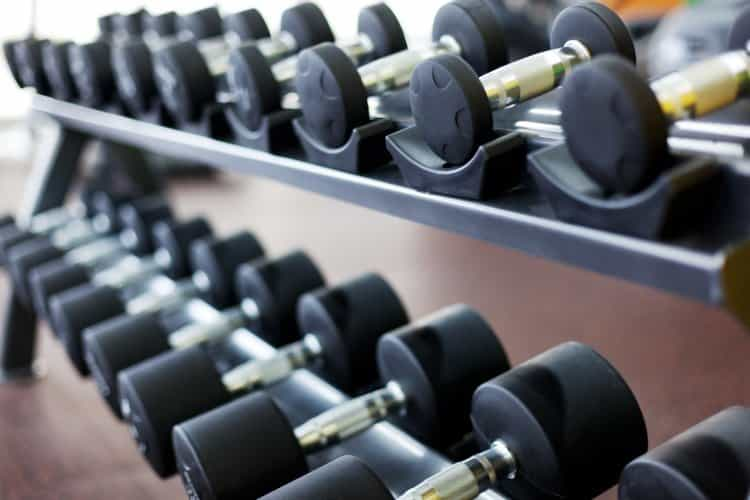
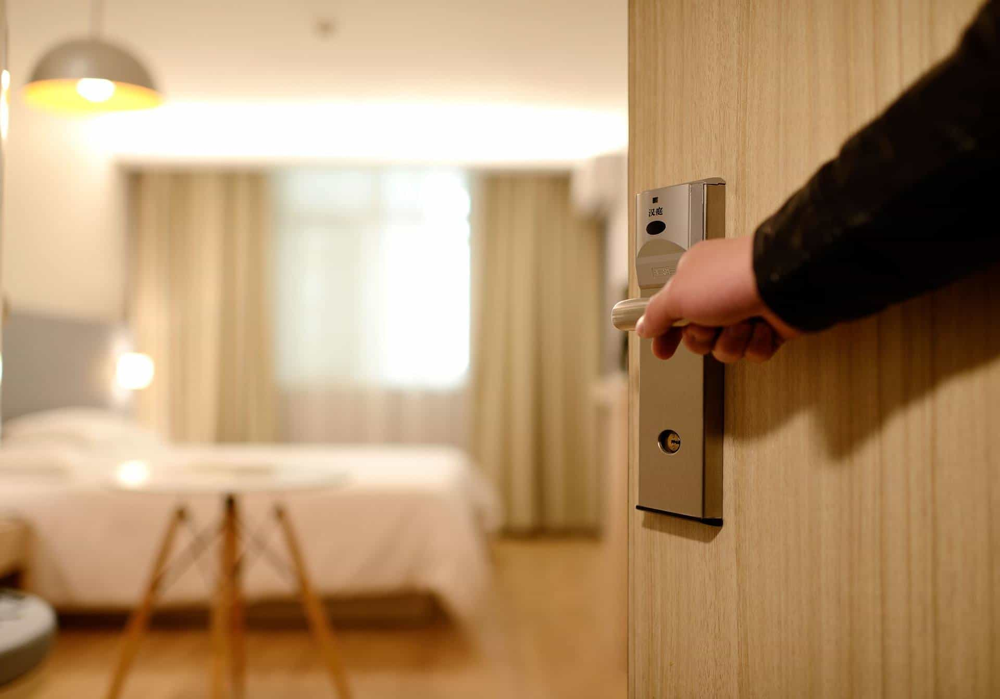
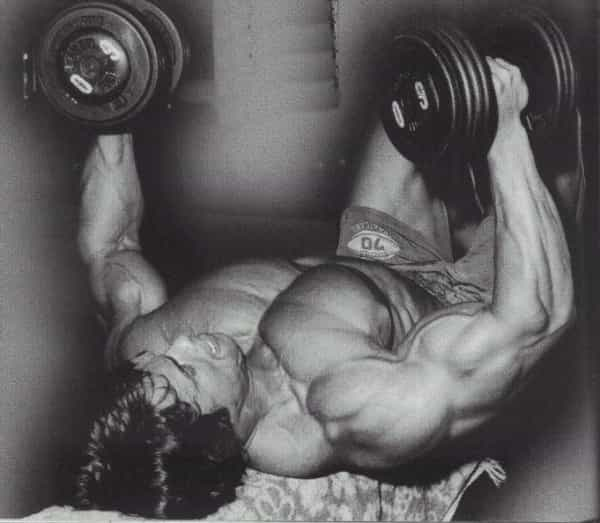
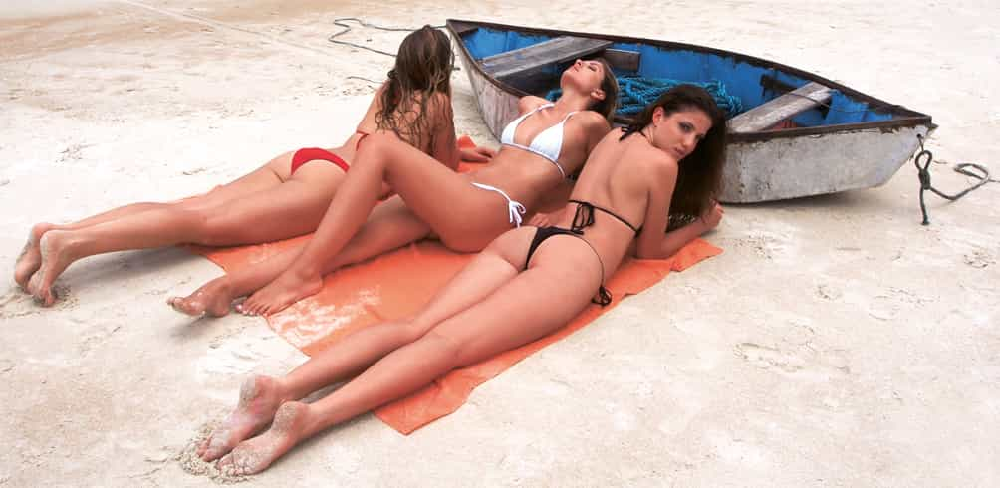

Traveling is a blast. Seeing faraway lands, making memories, going on adventures and experiencing brand new things. It’s something we could all use some more of. But a common question that comes up when we talk about traveling is this:
How do I workout while traveling?
After all, you worked your ass off to make those gains, and the last thing you want to do is see them melt away under the vacation sun on the white sandy beaches of Aruba.
So whether you’re living it up on vacation and experiencing all that life has to offer or traveling for business reasons, in this article, I’ll show you all my tips on how to workout while traveling so you don’t lose your gains (and even keep making them!).
1. Find a Gym in Advance

The first tip is to do your homework and find a gym in advance before you decide to travel. We’re not stuck in the Stone Ages. The world wide web is right there waiting for you, and unless you’re backpacking in the African jungle, most civilized places will have a gym in decent distance with standard workable equipment to get your gains on.
Determine where you’ll be staying and then research gyms nearby. If you’re traveling domestically and are member of a large commercial branched gym, check to see if there’s one in your area and if they’ll still take you in for being a member.
If not, then call up other local gyms. Let them know you’re just in town for a brief period and see if they’ll offer you a free guest pass or a reduced rate while you stay.
No matter what you do, ensure they have the equipment you need so you don’t show up surprised. Don’t be a diva, but a power rack and some dumbbells are a staple that’ll enable you to get your work done.
2. Get a Hotel with a Decent Workout Room

If tip #1 isn’t a viable option, then book your stay with a place that has a good gym of its own. Hotel gyms are notoriously bad and typically just contain a piece or two of dusty cardio equipment and a couple of rusty dumbbells, but you’d be surprised. There are lots of hotels who have stepped their game up and have several machines and a full rack of dumbbells without gashing you on the price points. After all, plenty of people who travel aren’t just vacationing and need access to a good gym to stay in shape.
In fact, if you do your due diligence, this may even be your best option. Sleep in, grab some coffee and continental breakfast, and head to the gym room to make some gains. Simple.
Research beforehand and scan the pictures of the hotel on their website. If it’s a nice setup, they’ll have photographs of their gym (from a business point of view, it’s a great selling point).
3. Lift Light

If your hotel does have a gym but the weights are too skimpy for your current level of training, then have no fear. Just train light. Research has demonstrated that light loads with sets even up to 25-35 reps are just as effective at building muscle as heavier loads with lower reps (1).
Granted, they’re also much more pump and burn inducing from the buildup of metabolites, but they do still work and if anything can give your joints a breather from your regular heavier lifts and potentially enhance growth of your Type I fibers.
4. Blood Flow Restriction
Packing your blood flow restriction (occlusion) wraps in your carry-on is a helluva lot easier to get through security than a duffel bag full of iron weight plates. Blood flow restriction training is a style of training whereby your occlude a muscle group by applying a cuff to the top of a limb and lift at only about 30% of your 1RM (!).
While it sounds fantastical, it has shown to be just as effective as heavier loading for muscle growth*. The wraps slow the veinous return of blood from the muscle, so metabolites accumulate that drive greater muscle activation despite the light load, leading to greater tension on the fibers. Increased cell swelling and other effects of metabolic stress are also proposed to drive the growth response we see from blood flow restriction training.
okay, enough of the science. Take a breather, champ
Simply apply the wraps to your limb and crank out your sets. The protocol most employed in research is as follows:
Set 1: 30 reps (to build up metabolites)
Set 2: 15 reps
Set 3: 15 reps
Set 4: 15 reps
Rest only 30-45 seconds between each set.
If nothing else, blood flow restriction is a great way to maintain size over short stints, and as an added bonus, it’s extremely time effective and perceptually requires less effort than traditional intensive loading, so you can knock your workout out fast and go about your day – with a skin-splitting pump, to boot. (For more on blood flow restriction training and how to implement it properly, check out my ultimate guide here.)
*Although I wouldn’t say it’s equal per se for making maximal gains, all things considered.
5. Chill and Let Chill

Lastly, the advice the dedicated gym-goer never wants to hear: Just chill out. If you’re going on a trip for just a few days, your muscle mass gains are not going to be compromised.
You may feel smaller from the lack of post-workout muscle swelling and less muscle glycogen, but gains in muscle size don’t up and vanish like that. Research has shown that losing appreciable size can take up to 3 weeks (2). And results are similar in the long term between untrained lifters who train continuously and those who take weeks off in between training (3,4).
Other research shows that muscle mass gains can be maintained even at 1/3rd of the volume it took to build it in the first place (5). So reduce your training or time your trip in conjunction with a deload or week off, and use your trip to focus on what really matters: Having a great time or taking care of business.
Conclusion
So there you have it: how to workout while traveling. As you can see, it just takes a little forethought and some smart training. Now go live it up.
References
- Schoenfeld BJ, Peterson MD, Ogborn D, Contreras B, Sonmez GT. Effects of Low- vs. High-Load Resistance Training on Muscle Strength and Hypertrophy in Well-Trained Men. J Strength Cond Res. 2015 Oct;29(10):2954-63.
- Fisher J, Steele J, Smith D. Evidence-Based Resistance Training Recommendations for Muscular Hypertrophy. Medicina Sportiva. 2013. 17:217-235.
- Ogasawara R, Yasuda T, Ishii N, Abe T. Comparison of muscle hypertrophy following 6-month of continuous and periodic strength training. Eur J Appl Physiol. 2013 Apr;113(4):975-85.
- Ogasawara R, Yasuda T, Sakamaki M, Ozaki H, Abe T. Effects of periodic and continued resistance training on muscle CSA and strength in previously untrained men. Clin Physiol Funct Imaging. 2011 Sep;31(5):399-404.
- Bickel CS, Cross JM, Bamman MM. Exercise dosing to retain resistance training adaptations in young and older adults. Med Sci Sports Exerc. 2011 Jul;43(7):1177-87.
Read More: 5 Pre-Workout Tips For Consistently Better Workouts